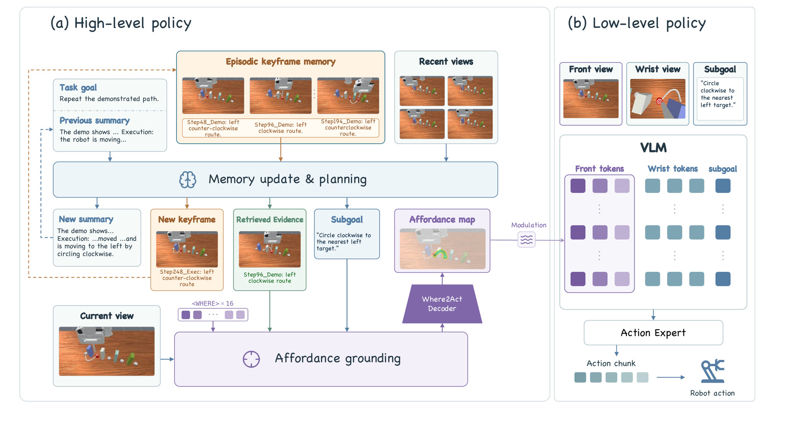
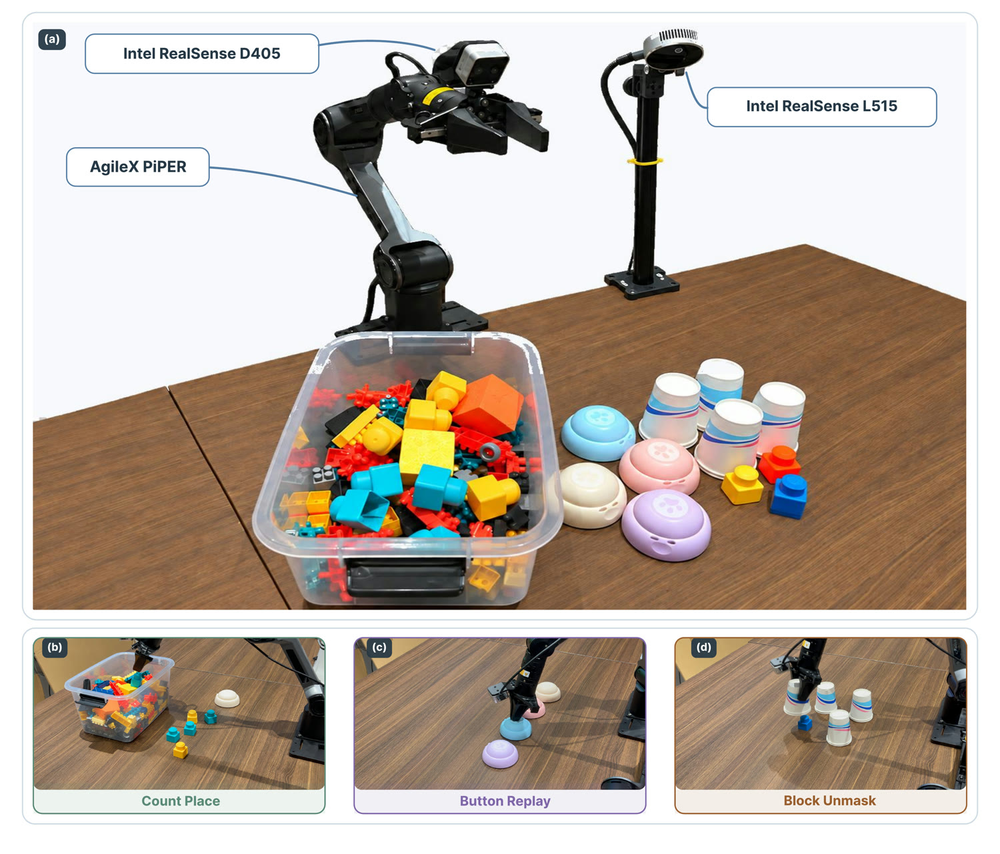

Anonymous ICLR 2027 Submission
EMAG
Event Memory Retrieval and Spatial Affordance Grounding for Non-Markovian Robot Manipulation
Abstract
Many real-world manipulation tasks are non-Markovian: the target of the current action may be determined by an event observed much earlier and therefore cannot be inferred from the current observation alone. Existing memory-augmented policies compress past observations into compact visual representations or textual summaries that track task progress, but do not explicitly couple semantic event retrieval with the visual evidence needed to re-ground a historically determined target in the current scene.
To address this issue, we introduce EMAG, which uses memory for semantic retrieval to identify which past event is relevant and for visual grounding to determine where its target is. Specifically, EMAG stores memory as captioned keyframes, pairing RGB snapshots of salient events with concise textual descriptions. Each caption serves as a semantic handle for memory retrieval, while the corresponding keyframe preserves the visual evidence needed for grounding.
Given the task goal, progress summary, and recent observations, EMAG queries the stored captions to retrieve relevant memory entries, re-grounds the corresponding target in the current observation, and predicts an affordance map that specifies the target region to act on. The predicted affordance map modulates the visual features of a low-level vision-language-action (VLA) policy to guide action generation.
Across all 16 RoboMME tasks, EMAG achieves an average success rate of 73.4%, exceeding the strongest official RoboMME baseline by 28.9 percentage points. On three real-robot tasks requiring object counting, object permanence, and sequence imitation, EMAG achieves an average success rate of 77.2%.
Method
EMAG separates the question of which past event matters from where its target is now.

Experiments
RoboMME
| Method | Counting | Permanence | Reference | Imitation | Overall |
|---|---|---|---|---|---|
| SAM2Act+ | 35.33 | 26.00 | 16.83 | 7.33 | 21.37 |
| MemER | 48.83 | 53.17 | 38.00 | 29.50 | 42.38 |
| FrameSamp+Modul | 65.22 | 25.11 | 36.33 | 51.39 | 44.51 |
| PonderPounce | 74.67 | 62.83 | 72.17 | 33.67 | 60.83 |
| EMAG | 77.50 | 70.17 | 79.67 | 66.33 | 73.42 |
Real-robot evaluation
